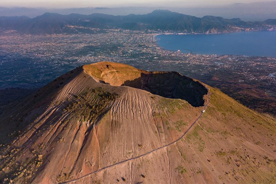

I parchi naturali italiani sono un tesoro di ecosistemi ricchi, paesaggi mozzafiato e unici legami tra uomo e ambiente. Scopri flora, fauna e le storie che rendono speciale ogni angolo protetto del nostro Paese.
Esplorali insieme a noi!

Parco Nazionale
del Vesuvio
Il Parco Nazionale del Vesuvio, istituito nel 1995, si sviluppa intorno al celebre vulcano che domina il Golfo di Napoli. Rinomato per l’eruzione del 79 d.C. che distrusse Pompei ed Ercolano, il parco protegge un territorio ricco di boschi, colate laviche, vigneti e insediamenti rurali, dove natura e storia si intrecciano. Il Cratere del Vesuvio è la principale attrazione, raggiungibile tramite un sentiero panoramico.
Altri luoghi d’interesse includono la Valle dell’Inferno, le Ville Vesuviane e i siti archeologici vicini. I visitatori possono esplorare il parco tramite una rete di sentieri, partecipare a tour guidati, o degustare prodotti locali come il vino Lacryma Christi e i pomodorini del piennolo. La flora comprende ginestre, pini, lecci e roverelle; la fauna include volpi, conigli, uccelli rapaci e numerose specie di bosco.
Il parco è oggetto di monitoraggio costante per conciliare turismo e sicurezza, dato che il Vesuvio è ancora un vulcano attivo. La visita al parco è un’esperienza affascinante che unisce natura, storia, enogastronomia e consapevolezza ambientale, in un territorio fragile ma ricco di vita e cultura.